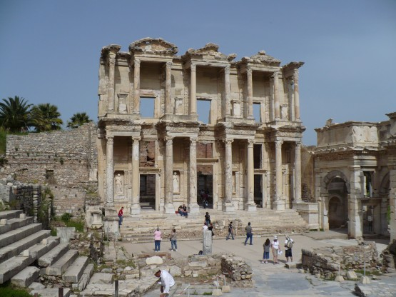
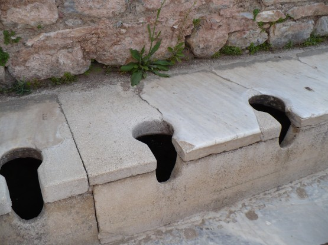
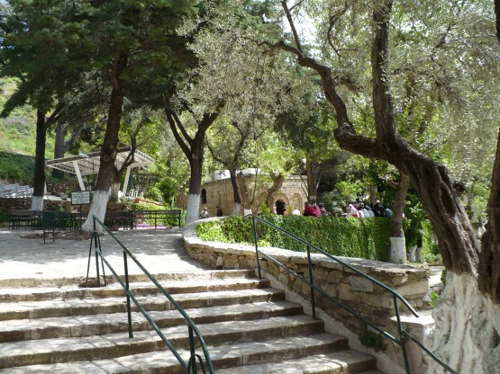
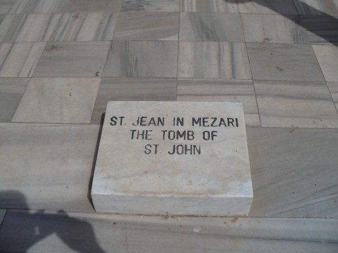
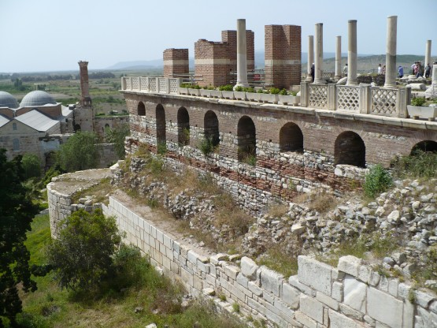
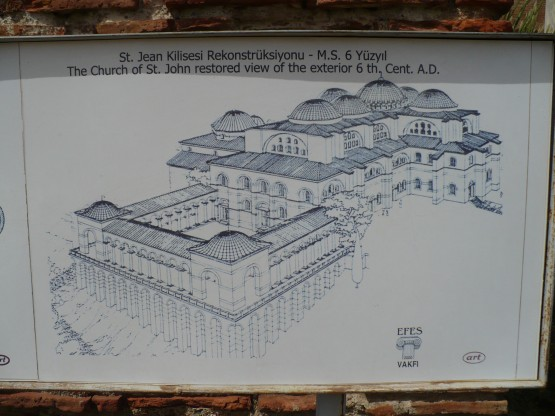

21 апреля
В этот день я сделал большую тактическую ошибку. Надо было съездить осмотреть Эфес и окрестности и вернуться на пляж, но я решил по-другому. До Эфеса доехал очень быстро, заплатил 10 лир за вход и вот я уже брожу по улицам древнего Эфеса. Да, тут есть, что посмотреть. Мраморные мостовые, фасады домов, надписи на римском и греческом. Кручу головой по сторонам и постепенно поднимаюсь в верхнюю часть города. Оказывается группы туристов привозят на автобусах именно вверх, а потом они спускаются вниз где их ждут автобусы. Понимаю, что мне такого счастья не светит, собираюсь в обратный путь и тут в первый раз за последнюю неделю слышу русскую речь. Оказывается, ТезТур проводит экскурсию для своих гидов, целый автобус гидов.
Буквально через пять минут экскурсии они все разбредаются в стороны, и я остаюсь практически один с экскурсоводом. Повезло. Индивидуальная экскурсия по Эфесу очень увлекательна и познавательна. Оказывается, я столько всего пропустил, осматривая самостоятельно!
Фасад библиотеки:

Мозаичная пешеходная дорожка идет вдоль мраморной мостовой. 
Догадайтесь, что это?

Без экскурсовода многих подробностей точно не увидел бы, например, маленький крест вырубленный над входом в амфитеатр. Оказывается, углубление амфитеатра использовали в качестве купели, когда крестили жителей города. В городе была удивительная система водопровода и канализации, в том числе огромные ливневые стоки под мостовыми. Ночное освещение существовало в 3 городах Риме, Константинополе и Эфесе. Жалко, что часть города была закрыта на реставрацию, по словам гида, там есть очень интересная эротическая настенная роспись спальной. В Эфесе я провел несколько часов и скучно, точно, не было.
Распрощавшись с любезным экскурсоводом, держу путь к домику Богоматери Марии. По приданию именно в доме, стоявшем на этом месте, она провела последние годы жизни.
В путеводителе написано 600 метров вверх по высоте. Дорога начинается прямо от Эфеса.
На самом деле оказывается 400, но дорога действительно крутая и полуденная жара дает почувствовать себя настоящим паломником. Немного не доезжая до места опять встречаю ТезТуровский автобус, все машут мне руками. Сидят под кондиционерами и даже не знают в чем оно счастье, думаю я, вкручивая на 1:1 при 35 градусах.
Вот и Домик. Все сделано очень аккуратно, кругом цветы, тень. Очень приятное место.
Домик.

Резво спускаюсь с горы и принимаю неверное решение ехать дальше на Измир. То что Измир это очень длинная населенка я знал, но понадеялся найти место для стоянки перед ним.
Еду дальше, следующий пункт базилика, построенная на месте могилы Св. Иоана. Находится это место в городе Сельчук и выгляди вот так:

Базилика:

Так она выглядела раньше:

От Сельчука поехал по 550 дороге в сторону Измира. Местность практически равнинная и ничем особо не примечательная. Места для стоянки не попадалось, незаметно стемнело, и в Измир я приехал уже в полной темноте. Город громадный, но делать нечего, решил ехать до упора. Примерно в 1 час ночи прокололся, потерял время. Наконец в 3 часа начались какие то поля. Отъехал метров 10 от дороги, поставил палатку в высокую траву и вырубился.
**
Я уже писал о том, как мне понравились дороги в горах и вдоль моря, так вот дорога в районе Измира это совсем наоборот. Узкая, загруженная до предела, но даже это не самое страшное. Все, конечно, видели асфальт, который пошел волнами (колеями) от солнца и нагрузки, ехать по нему мягко сказать неприятно. Так вот тут было еще хуже, турки придумали способ бороться с этими волнами, они их срезают машиной снимающей асфальт. Возможно, потом они положат еще слой, но мне пришлось ехать десятки километров по узким продольным бороздам. Доложу вам это очень неприятно и сильно напрягает, находишься в постоянном напряжении, устаешь как физически, так и морально. К этому надо добавить, что водители турецких грузовиков считают, что расстояние в 10 сантиметров вполне достаточный интервал для велосипедиста. Наши просто ангелочки в сравнении с ними. Планируя маршрут по Турции надо обязательно избегать узких дорог с большим трафиком.
За день проехал 142 километра, уснул быстро.